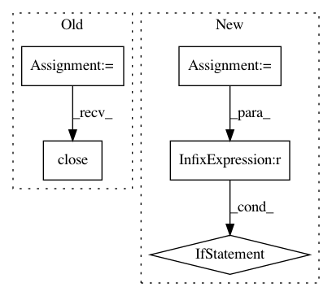

5ca403cee17ee1e2a704e03bf06d47f2ce9ba222,examples/audio.py,,,#,33
Before Change
x = st.text("Making wave...")
sine_wave = note(frequency, duration, amplitude, sampling_rate)
f = wave.open("sound.wav", "w")
f.setparams((nchannels, sampwidth, int(sampling_rate), nframes, comptype, compname))
x.text("Converting wave...")
f.writeframes(sine_wave)
f.close()
with io.open("sound.wav", "rb") as f:
x.text("Sending wave...")
x.audio(f)
After Change
return out
avdir = os.path.expanduser("~")
audiofiles = get_audio_files_in_dir(avdir)
if len(audiofiles) == 0:
st.write(
"Put some audio files in your home directory (%s) to activate this player."
% avdir
)
else:
filename = st.selectbox(
"Select an audio file from your home directory (%s) to play" % avdir,
audiofiles,
0,
)
audiopath = os.path.join(avdir, filename)
st.audio(audiopath)
st.header("Generated audio (440Hz sine wave)")
def note(freq, length, amp, rate):
In pattern: SUPERPATTERN
Frequency: 4
Non-data size: 5
Instances
Project Name: streamlit/streamlit
Commit Name: 5ca403cee17ee1e2a704e03bf06d47f2ce9ba222
Time: 2020-02-06
Author: naomi@nthmost.com
File Name: examples/audio.py
Class Name:
Method Name:
Project Name: tensorlayer/tensorlayer
Commit Name: f2073333b710a340403843763ba60eb1e6699916
Time: 2019-04-11
Author: rundi_wu@pku.edu.cn
File Name: examples/data_process/tutorial_tfrecord2.py
Class Name:
Method Name:
Project Name: streamlit/streamlit
Commit Name: 01bf5dd323bebd66b7ad60fdaee34eb8f7b76aae
Time: 2018-08-09
Author: armando@playground.global
File Name: lib/streamlit/proxy/Proxy.py
Class Name:
Method Name: _print_remote_url
Project Name: streamlit/streamlit
Commit Name: 883644354ca6c016a9b79d67e0494db88a823c23
Time: 2018-08-14
Author: armando@playground.global
File Name: lib/streamlit/proxy/Proxy.py
Class Name:
Method Name: _print_remote_url